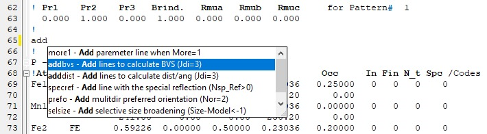
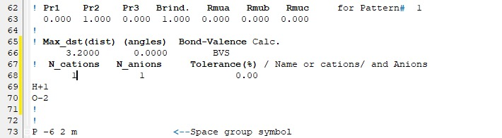

Internal editor¶
The internal Editor is a simple text editor that allows you to open any file. It allows multiple files to be opened in one window. The files are open in separate tabs. It has the usual functionality of the text editor. For the PCR files, it offers additional tools and functions helpful in handling the structural refinements with FullProf.
It can be opened from the Main from using menu or toolbar button. It will also open any time the files are edited. If no external editor is selected in Pref->General setup, then the internal one is used.
{kind=link}
Empty page in Editor form¶
The description of the basic text editor functionality, such as Open, Save, Find, Undo, etc., are skipped here. Instead, the focus is on the description of the advanced tools for the PCR files or the application itself.
General editor area¶
- Line numbering and edits
Lines are numbered, and if some change is made to the text, a yellow mark will be placed on the left side of the text. If the file is saved, the colour changes to green.
- Keywords
The main keywords are printed in bold.
- Folding
The content of the PCR file can be folded at several points to shorten the content on the page. See the small rectangles on the left side of the text.
- Autocompletion
When pressing Ctrl-Space in the empty space or predefined short commands, you can initiate the auto-completion dialogue, which allows you to add special nontrivial additional lines of code for further analysis.
Example of adding the lines necessary to produce the BVS calculation. Type “add” or “bvs” and initiate autocomplete by Ctrl+Space. You should see the following.
If you select the proper adding routine (adding BVS calculation), the auto-completion will add the necessary lines which still need to be updated, but it gives you hints about what needs to be added.
Attention
You have to know where those additional lines have to be added and initiate the autocomplete from the proper location.
{kind=link}
{kind=link}
Menu and Toolbar¶
Most of the Menu items have their corresponding Toolbar buttons.
{kind=link}
{kind=link}
{kind=link}
{kind=link}
{kind=link}
Top toolbar and menu View¶

Show FullProf hints - When enabled/pressed, the description of the keywords in the form of hint will appear when the cursor is over it. The font size of the hints can be adjusted in the Pref->Colours&layout.
{kind=link}
Editor with the PCR file open and active hint on the Job parameter¶
Note
Keywords descriptions are taken from the FullProf manual (year 2000) combined with additional information from changelog and personal experince. If you have more insight help update, please (see Menu Special below).
{kind=link}
{kind=link}
{kind=link}
{kind=link}
Help¶
{kind=link}
FullProf News(Ctrl(⌘)+Alt+M)It opens in the editor the FullProf changelog (information from the year 2000 onwards)
{kind=link}
FullProf Manual(Ctrl+Shift+M)It opens the FullProf manual (PDF file from 2000) in the default viewer.